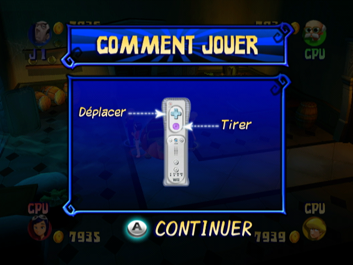

9 |
Gameplay |
 |
Choisissez un personnage, entrez dans le manoir, jouez aux mini-jeux, relevez les défis du plateau de jeu et découvrez les cases spéciales. Ces différentes épreuves vous permettront de découvrir le mot de passe et de trouver le trésor ! Ecran de difficulté C'est sur cet écran que vous pourrez choisir le niveau de difficulté. Il y a trois niveaux différents (Facile, Normal et Difficile). Dans les niveaux les plus difficiles, les énigmes seront plus ardues, rendant le mot de passe plus difficile à deviner. N'oubliez pas aussi que plus vous progresserez dans le mode Aventure et plus les mini-jeux seront difficiles. Ecran de choix des personnages et écran de choix du nombre de joueurs C'est sur cet écran que les joueurs choisissent les personnages qu'ils veulent incarner parmi les quatre proposés, et ainsi déterminer quels personnages seront contrôlés par la console. Vous pouvez accéder à l'écran de choix du nombre de joueurs depuis l'écran de choix des personnages. Vous avez le choix entre quatre combinaisons : 1 joueur et 3 CPU 2 joueurs et 2 CPU 3 joueurs et 1 CPU 4 joueurs Se joindre au jeu en milieu de partie Un joueur peut remplacer un CPU à n'importe quel moment de la partie. Le nouveau joueur devra alors connecter sa manette Wii Remote à la console Wii (si cela n'a pas encore été fait). Le nouveau joueur remplacera le CPU correspondant au témoin du joueur sur sa manette Wii Remote. Par exemple, une manette Wii Remote indiquant un témoin du joueur 3 remplacera le joueur 3 contrôlé par un CPU. Le nouveau joueur reprend le jeu en cours avec la somme d'argent accumulée par le CPU jusque là. Dès qu'un nouveau joueur a rejoint la partie, il ne peut plus être remplacé par un CPU. Ecran de tutoriel des défis  Juste avant le début du défi, un écran vous expliquant les règles du jeu apparaît. Débloquer des mini-jeux Au début du jeu, tous les mini-jeux ne sont pas débloqués dans le mode Mini-jeux. Vous les débloquerez au fur et à mesure de votre progression dans le mode Aventure. |
 |
 |
 |